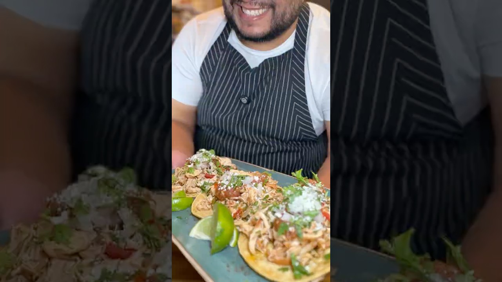

| Course | Main Dish |
| Categories | Chicken, Wrap |
| Collections | benjamins.kitchen |
| Source | benjamins.kitchen – YouTube |
| Notes | see “Notes” below |

Reconstructed from the video's narration. It's a short, loosely-told recipe with no quantities and it builds on leftover shredded chicken made in an earlier video (not shown here). Steps are as narrated; all amounts are gaps.
Poblano peppers
Tomatoes
Onion
Garlic cloves (a couple), unpeeled for roasting
Extra virgin olive oil
Salt
Leftover shredded cooked chicken
Corn tortillas
Homemade chicken broth
All-purpose seasoning blend (the video uses "Casa del Buey All-Purpose Sonora" spice; any all-purpose or taco seasoning works)
Homemade salsa
Diced white onion
Cilantro (optional)
Cotija cheese
Line a sheet pan with parchment. Add the poblanos, tomatoes, onion, and a couple of unpeeled garlic cloves. Drizzle with extra virgin olive oil, sprinkle with salt, and toss to coat.
Broil until everything is charred.
Put the poblanos in a zip-top bag, seal it, and let them steam 20–30 minutes.
Take the poblanos out, peel off the charred skins, remove the stems, and scrape out the seeds. Slice, then dice.
Peel the roasted garlic and chop it along with the roasted tomatoes and onion.
Heat some extra virgin olive oil in a skillet. Add the shredded chicken and crisp it for about 2 minutes to get some color, then cook a few minutes more.
Add all the roasted vegetables and stir to combine.
Pour in some homemade chicken broth and season with the all-purpose seasoning. Simmer until the liquid reduces, then taste and adjust.
Warm the tortillas.
Build the tacos: tortilla, chicken mixture, homemade salsa, diced white onion, cilantro if using, and cotija cheese.
Gap in this export: Any quantities — number of poblanos, tomatoes, onions, garlic cloves; amount of shredded chicken, broth, oil, salt, or seasoning; number of tortillas
Gap in this export: Broiler time and how long to simmer/reduce
Gap in this export: Prep time, cook time, and number of servings
Gap in this export: The leftover shredded chicken recipe itself (made in a separate video)